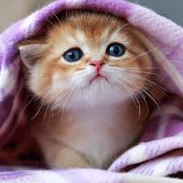
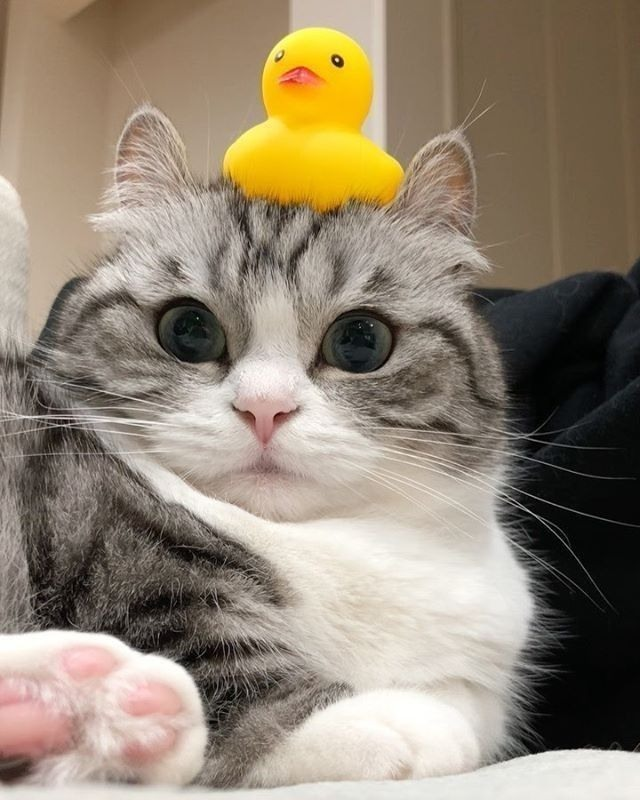

А ця сторінка з Історією нашого проекту
Як появився проект
Одного разу один із наших засновників сказав.Що було б дуже добре побудувати сушарню в підвалі нашої школи.
Ми охоче підтримали цю ідею і почали вигадувати план.
Спочатки ми купляємо всі інгрідієнти,а потім на 7-8 уроці пробираємся в їдальну через підкоп з сусіднього района
Там ми варим наші CУС-ики а потім в підвалі робимо підпольну їдальню
Тільки самі філософи які розгадували загадку,яку ми загадали йшли до нас і їли наші супер суші
Потім ми почали співпрацювати з поставниками школи,згодом з самою школою
Дуже скоро ми вишли за рамки підпольної їдальні і стали супер сігмами
потім мене Сігму-Любомира заставили зробити сайт щоб наші CУСики їла вся країна!
P.S. Це кінець бреду малого хлопчика якого заставили робити Курсову чи що там
Вот вам коти щоб було мило (*^-^*)


